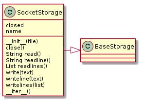

This is a module for classes that implement a file-like interface to a socket. Its main purpose is to catch socket timeout errors.
Not all of the methods make sense (like open) so only a sub-set will be implemented. The assumption will be that a file-like object was created elsewhere and passed in to the constructor.

SocketStorage(file_object) |
A class to store data to a file |
SocketStorage.close() |
Closes self.file if it exists, sets self.closed to True |
SocketStorage.write(text) |
write text to a file |
SocketStorage.writeline(text) |
Adds newline to end of text and writes it to the file |
SocketStorage.writelines(texts) |
write lines to a file (does not add newline character to end of lines) |
SocketStorage.readline() |
Calls a single read-line returns ‘timed out’ if socket.timeout |
SocketStorage.readlines() |
reads all the output and returns a list of lines |
SocketStorage.read() |
reads all the output and returns as a single string |
SocketStorage.__iter__() |
Traverses the file |
Although the main reason for this class is to trap socket timeouts when reading lines, it will raise an ApeError when an attempt is made to read the entire buffer (i.e. read readlines) so that if it is really an error to have a timeout, these methods can be used instead. Generally, the main interface is assumed to be the __iter__ method, though, which will catch the timeouts forever, returning the socketstorage.TIMED_OUT string (copying python’s socket.timeout message-string).
[Errno 2] No such file or directory Is pylint installed? .. image:: classes_socketstorage.png